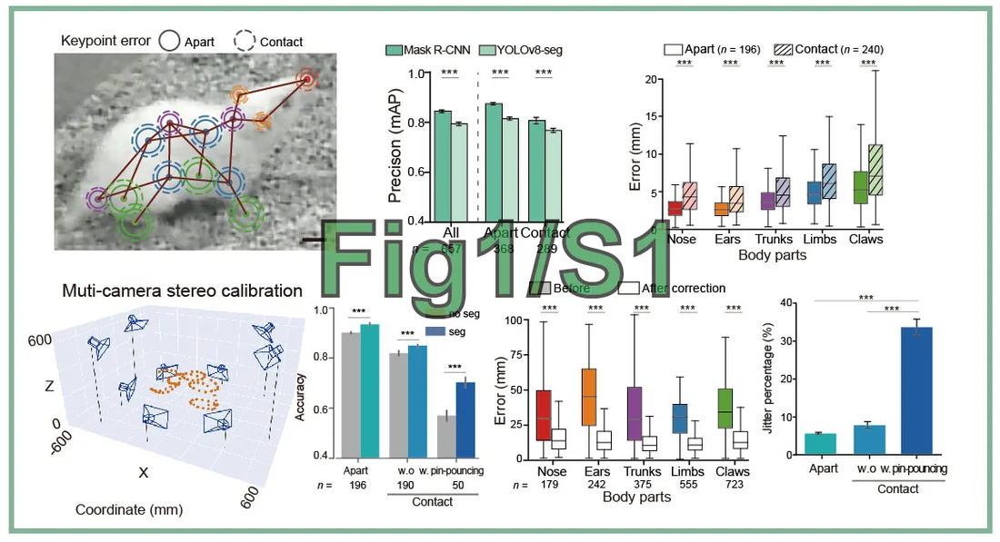
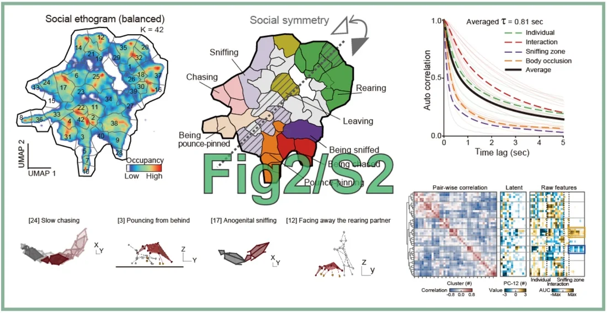
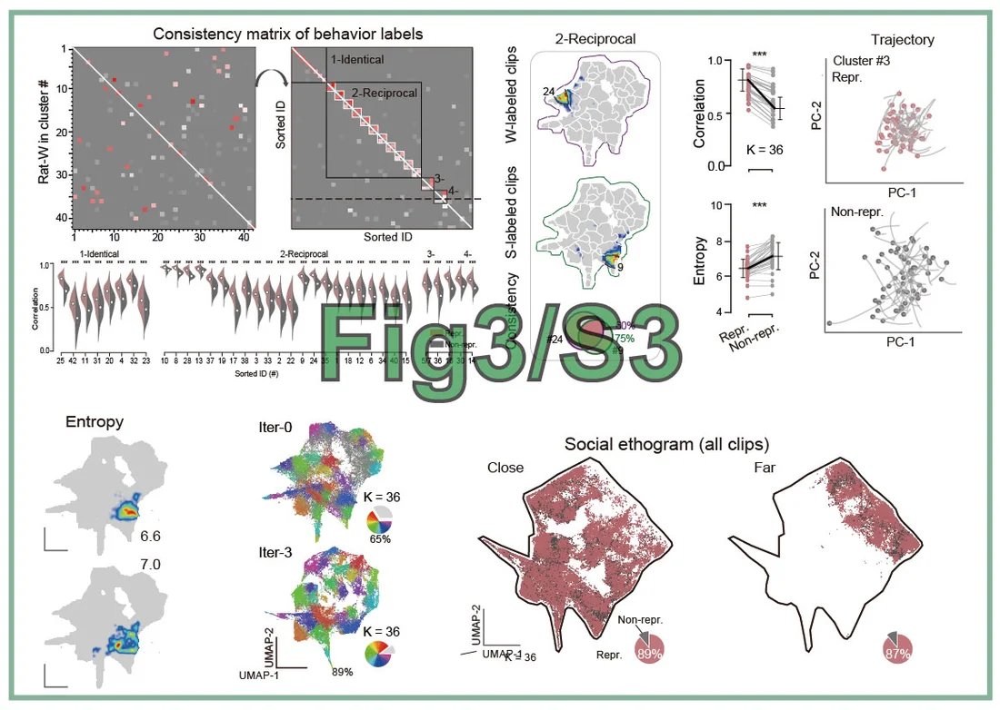
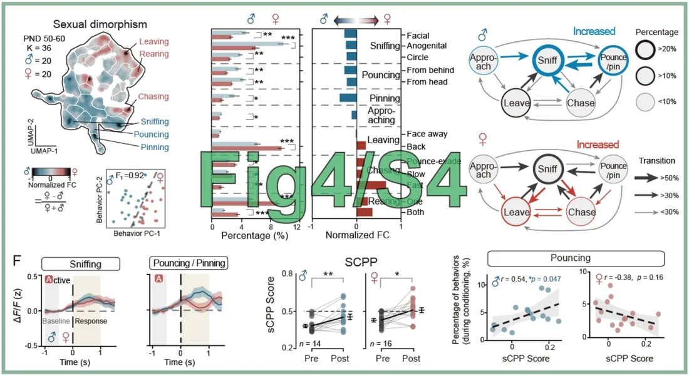
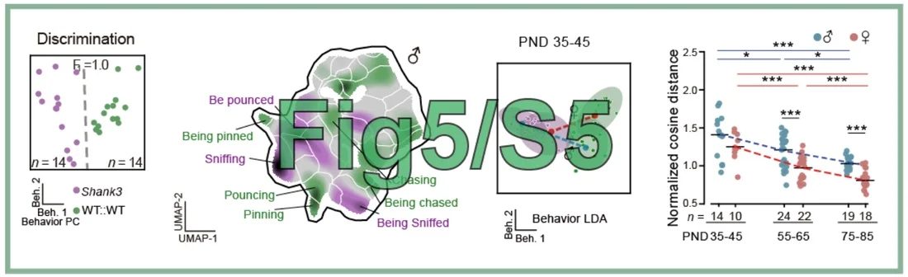
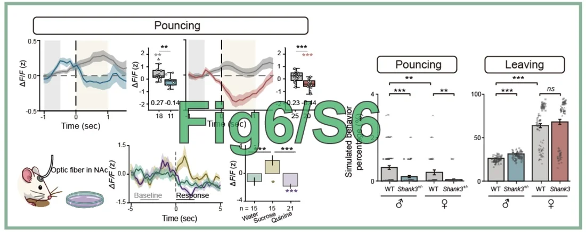
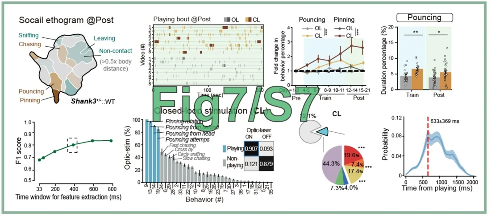
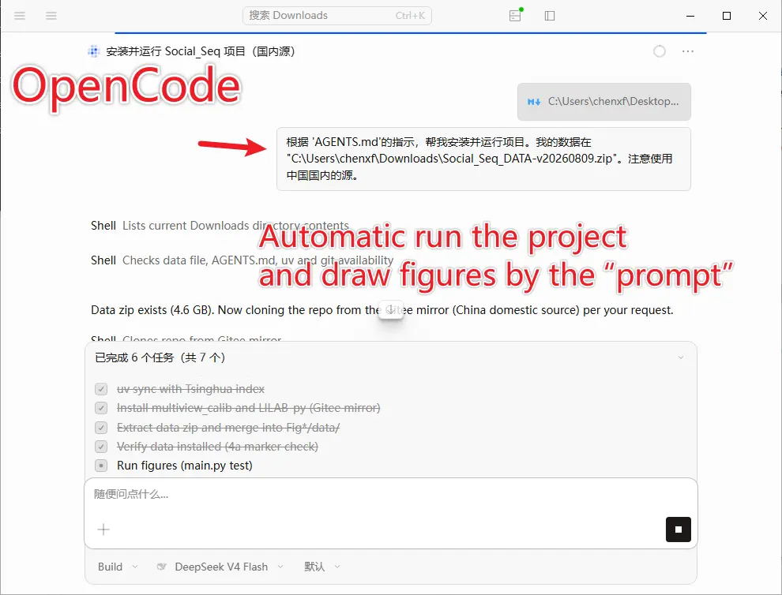

Paper Figure Reproduction
"Chen X.F., Tao X.M., Zhong Z.C., Zhu F.Y., Zhang Y.Q., Wang Y.Z., Wang M., Sun L., Li Y.X., Ouyang Y., Ding Z.Y., An M., Zhao Y.Y., Zhou J.F., Zhang R., Xiong W., Ji N., Li Y., 2026. Sub-second dopaminergic reinforcement orchestrates juvenile social play and is disrupted in Shank3 deficiency. In preparation"
Author: Chen Xinfeng (2025-08-09). Revised: Tao Xianming (2025-08-15), Chen Xinfeng (2026-08-07).
Figures Gallery
Run the code in this repository to reproduce all the figures in the paper. The images below show example outputs. Windows, Linux, and macOS are supported.







1. Code and Data Download
The data are openly available for download (file: Social_Seq_DATA.rar, ~4.1 GB) via Mendeley Data🔗 or Baidu Cloud🔗. After downloading, extract the archive and rename the folder to Figshare.
The source code is openly available at https://github.com/LiLab-CIBR/Social_Seq-Paper-Figure-Replication.
The directory structures of the data and code are one-to-one matched. Please manually copy the contents of Fig*/data/* from the data folder into the corresponding code folder.
2. Installation (Recommended: Use an AI Agent)
You can use AI coding assistants such as OpenCode, Codex, or Claude. Just provide the following prompt, and they will automatically install the environment and generate all the figures.

Follow the instructions at https://lilab-cibr.github.io/Social_Seq/assets/figure_reproduce/AGENTS.md to install and run the project, and generate all the figures. My data is located at
C:\PATH\XXXXX\Social_Seq_DATA-v20260809.zip. Please use a domestic mirror source; otherwise, the installation will be very slow.
3. Manual Installation
For the detailed manual installation steps, please refer to "https://github.com/LiLab-CIBR/Social_Seq-Paper-Figure-Replication". The general process is as follows.
First, install the dependency environment using uv.
git clone https://github.com/LiLab-CIBR/Social_Seq-Paper-Figure-Replication . # Download the code to the current folder
python3 -m pip install uv # uv is a lightweight Python package manager, similar to conda
uv sync --index-url https://pypi.tuna.tsinghua.edu.cn/simple # Users in mainland China may use the Tsinghua mirror; otherwise, the installation will be very slow
uv run python --version # Verify the Python version (should be 3.12)
Note: Do not use
uvandcondasimultaneously, as this will cause package installation conflicts. Please runconda deactivatefirst before running the commands below.
Install Custom Packages
uv pip install git+https://github.com/chenxinfeng4/multiview_calib.git
uv pip install git+https://github.com/chenxinfeng4/LILAB-py.git ../LILAB-py
Generate a Single Figure: Fig1D.pdf
You can also run the scripts Fig*/Fig*.py one by one to generate a single figure.
uv run python Fig1_S1/Fig1D.py # The result is saved to Fig1_S1/result/Fig1D.pdf
Note: If any error occurs, please make sure all the data files have been downloaded correctly.
Generate All Figures with One Command
uv run python main.py test
Fig*/result/*.pdf, e.g., Fig1_S1/result/Fig1G.pdf.
Clean All Results and Reset
uv run python main.py clean
Or manually delete all the result files:
rm Fig*/result/*pdf Fig*/result/*pkl Fig*/result/*png